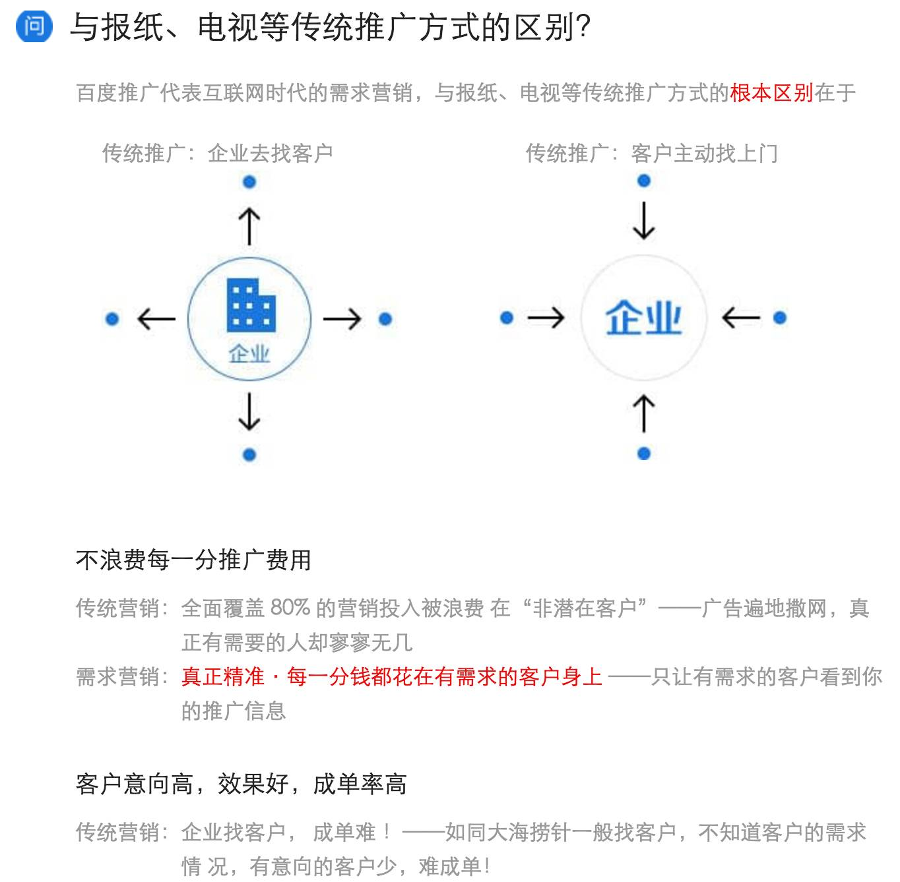

狼性多了，人性就少了
Contents

为避免被投诉侵犯商誉，本文并没有出现这家公司的名称，请大家自行脑补。虽然我完全没认为他们有商誉存在。
这几天，那家著名的懂中文公司又出事了，史称“魏则西“事件，相信到现在已经没人不知道这件事的详情了，我也无需在这里重复一次了。很多人问我，你要不要写一篇？起初我是不想写的，因为关于这家公司的观点，我之前写过好几篇，道理和逻辑已经说的足够清楚了，例子也举的足够多了，无论再怎么说，也没什么新东西了。
但是这几天看了这家公司找来的各路有意无意的洗地党，我还得再补充一篇。
一个医疗事件的产生，当然不是一家公司作恶的结果，必然是一个作恶的链条。那么为什么要揪住这家公司狠打呢？很简单，因为每个人有自己觉得必须要做的事。做为一个互联网从业者，我认为信息或者互联网入口是力量最大的资源，所以把用户导向这个欺骗链条的，就是首恶。再加上每次事件之后这家公司玩弄的公关技巧，更是让人厌恶，因此，我认为至少在互联网/科技行业从业者中，把传播这家公司的恶行做为首要目标，是没有问题的，也是职业特征的提现。让更多的人知道它是不可信的，就会少一些人受骗。
下图来自这家公司常见问题页面。

当鼓吹这种模式优点的时候，他们不遗余力说明自己优秀，“客户意向高，效果好，成单率高”。等到有人受骗破财丧命的时候，他们反而谦虚起来了。这家公司的员工/公关/前员工以及不明真相群众这几天忙着指责我们这些批评他们的人，说我们是愤青。创始人甚至说如果关掉该公司就能解决问题，他立刻就关。这件事并不需要如果，他们自己的这个介绍页面说的很清楚，如果不通过他们的话，使用传统营销方式的话【全面覆盖 80% 的营销投入被浪费 在“非潜在客户”——广告遍地撒网，真正有需要的人却寥寥无几】，可见如果没有他们，骗子们投入同样的营销费用，受骗的人能少个80%。
基于以上原因，我真心希望这家公司死掉，如果能少80%的人受骗，已经是很大的成绩了。等它死掉，我们自然会去批评下一个作恶者。进地狱下油锅的队伍，也得排队一个个下，是不是？
当然，有一些人出于职业和经历的不同，真心认为医院、法律、监管部门责任更大，这种说法不都是为了给那家公司洗地。有这种看法是不错的，下一步，请用你的能力和影响力，去追查和宣传这些责任方具体人员的责任，写出逻辑、证据清晰的文章来。就像我们对这家公司一样，大家各自做自己擅长的事情，问题才能解决。做为工程师，我相信一个大问题是可以被拆散成小问题依次解决的，每个人在自己擅长的领域尽力就好，但是，那些列出来一堆名词，并不真去追求他们的责任，反而骂责怪这家公司的人是愤青，是别有用心，这不是洗地还能是什么？尤其是那家公司的员工前员工们，最喜欢说的就是“那么多环节有问题，为什么只骂我们？”就好像被公诉的骗子在法官面前给自己辩护，不应该判我的刑，骗子多了去了，我只是倒霉被抓住了，那么多没被抓住的，你们今天要判决我，这公平吗？我想任何一个有正常思考能力的人都会斩钉截铁的回答：“当然公平“。
我之前曾经在文章中写过，我对这家公司改正不报任何希望。原因很简单，他们根本没打算改。这么说是有根据的，在“魏则西“事件之后，原始的“滑膜肉瘤”这个关键词相关的搜索结果中，广告部分立刻就被他们删掉了。但是搜索“软组织肉瘤”、“横纹肌肉瘤”、“纤维肉瘤”之类的相关疾病，结果依旧充满了广告，并且欺骗了“魏则西“仍然在其中。要知道，这家公司的后台是可以查到一个客户投过哪些关键词的，就连根据自己后台数据，把这个已经确定是骗子的客户投放所有关键词都删掉，相关网站都屏蔽这么简单的事情，这家公司都不肯干。这说明了什么？说明了骗得就是你。（以上相关疾病搜索结果来自 “我还是想改名但是”的文章 http://tech.sina.com.cn/zl/post/detail/i/2016-05-01/pid_8507315.htm ）
很多人质疑说审核广告哪有那么容易。这就是一个现成的例子，事前审核的事情难不难暂且不说，出了大事，被媒体口诛笔伐之后尚且不舍得这些利润，这要歹毒到什么程度的人才能做如此决定？实在难以想象。这家公司一直在要求自己的员工有”狼性“，我觉得他们企业文化做的相当成功，一次又一次的事件都说明了，这家公司充满了狼性，以至于没剩下几分人性。
请给企业文化部门加薪吧，他们真的很努力。
还有一种说法是“不要一棍子打死，这家公司的XXX服务还不错”（比如视频或者网盘啥的），这种说法也挺糊涂的。无论你从什么服务进入这家公司的天罗地网，最后总是会被装一堆插件（业内称作XX全家桶），最后用户往往还是被导回搜索，因为那才是利润来源。互联网的商业模式大家都很清楚，各种免费服务用来导入用户，最终到某几个具体的业务变成收入，所有免费的，做的好的，不涉及核心业务的产品，最终都是为核心业务服务的。在这家公司的案例中，我们可以简单概括为，都是为骗人服务的。从这个角度看，这家公司做的越好的产品，害的人就越多。这家公司最让我欣赏的员工，就是那些浑水摸鱼，不好好工作，做出来一个个垃圾产品的员工，他们避免了更多的人受骗，值得尊重。
我之前写过几篇关于这家公司的文章，几乎每篇都有数百条留言，简直是一部中国互联网血泪史，很多情况是我们这些对互联网非常熟悉的人也完全想不到的情况。比如：
- 有人跟我说，考研搜索考研资料，最后买到了假资料，考研失败。我知道洗地党会说“他买到真的也未必考研就成功”，是的，他是未必成功，但是做为一个正常人，我还是希望他买的真的资料而不是假的。
- 有人跟我说，发论文搜索期刊，遇到了假期刊，差点没能毕业。我知道洗地党会说“他投的真的期刊也未必就能发表”，是的，他是未必能发表，但是做为一个正常人，我还是希望他能投到真的期刊，而不是假的。
- 有人跟我说，搜索小米手机，最后买到了一个假手机。我知道洗地党会说“不去官网买，缺乏基本使用能力，给他真的他也用不出好来”，是的，给他一个真的小米手机，他可能用的也挺艰难。但是我仍然希望他付了小米手机的钱，拿到真的小米手机，哪怕他只是放在桌上当摆设。
…
有人说，“围绕这家公司的责骂显得缺乏新意”，我看是洗地的方法比较缺乏新意才对。
我们未必能骂死这家公司，但至少我们能骂到媒体不敢为这家公司造谣，记者不敢被这家公司请去迪拜。如果有一天能做到这样，这件事就已经走在了成功的道路上。不要因为看起来没什么效果而不说话，不要因为怕得罪人而不敢说话，发出自己的声音吧。
这就像一块大石头横在路上挡路，你踢了它一脚，它纹丝不动，你又踢了一脚，还没动，但你并不在乎，继续踢，累了休息一下继续踢。后来越来越多的人加入这个行列一起踢，他们并不在乎旁边的人说着风凉话，也不在乎有人笑他们愤青脑残别有用心，只管一脚一脚踢石头。终于有一天，这块巨石松动了，终于有一天，这块巨石轰然滚到了山下。
参考备注：以前我写过的关于这家公司的文章：
- 标题图 Engraving depicting the beast of Gévaudan (1764) 来自 wikipedia “Wolf attacks on humans” 条目
- 我是如何坚持10多年站在反某家公司第一线的
- 再谈百度：KPI、无人机，以及一个必须给父母看的案例
- 3.15，今天我被一家公司投诉了
- 写给和百度作战的文艺工作者们
- Google百度和谷歌的那些事
- 魏则西父母致电财新网 发独家声明
Author Huo Ju
LastMod 2019-01-26